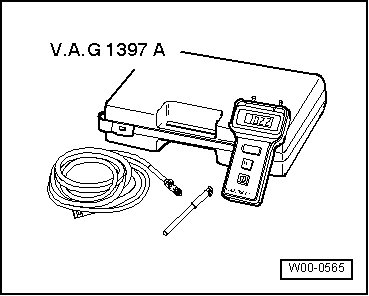
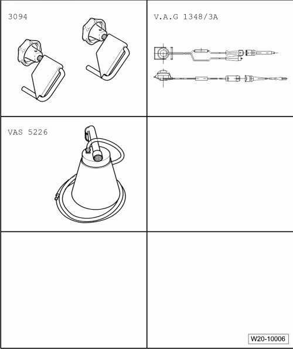
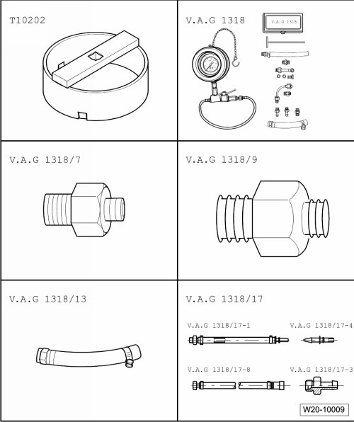
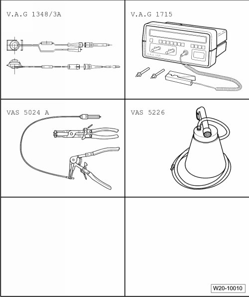
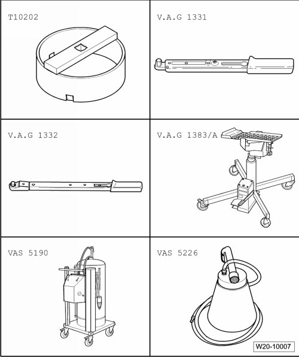

Fuel Supply
Special Tools
Special tools, testers and auxiliary items required
• Measuring container
• Wiring diagram
• Hose 6 mm dia.
• T-piece (251 201 346)
• Fuel system tester (smoke tester) (KLI 9210)
• Hose adapter (KLI 9210/55-2)
• Vehicle diagnosis, testing and information system (VAS 5051B), (VAS 5052) or (VAS 5053)
• Adapter (V.A.G 1318/20)
• Adapter (V.A.G 1318/20-1)
• Hose (V.A.G 1318/24)
• Adapter cable (V.A.G 1348/3-3)
• Assembly tool (T10118)
• Turbocharger tester (V.A.G 1397A)


Special tools, testers and auxiliary items required
• Hose clamps up to 25 mm dia. (3094)
• Remote control connection (V.A.G 1348/3A)
• Diesel extractor (VAS 5226)

Special tools, testers and auxiliary items required
• Wrench (T10202)
• Pressure gauge (V.A.G 1318)
• Adapter (V.A.G 1318/7)
• Adapter (V.A.G 1318/9)
• Hose (V.A.G 1318/13)
• Pressure gauge adapter (VAG 1318/17)

Special tools, testers and auxiliary items required
• Remote control connection (V.A.G 1348/3A)
• Multi meter (V.A.G 1715)
• Spring-type clip pliers (VAS 5024A)
• Diesel extractor (VAS 5226)

Special tools, testers and auxiliary items required
• Wrench (T10202)
• Torque wrench (5 to 50 Nm) (V.A.G 1331)
• Torque wrench (40 to 200 Nm) (V.A.G 1332)
• Engine/transmission jack (V.A.G 1383/A)
• Fuel extracting device (VAS 5190)
• Diesel extractor (VAS 5226)
• Not illustrated: